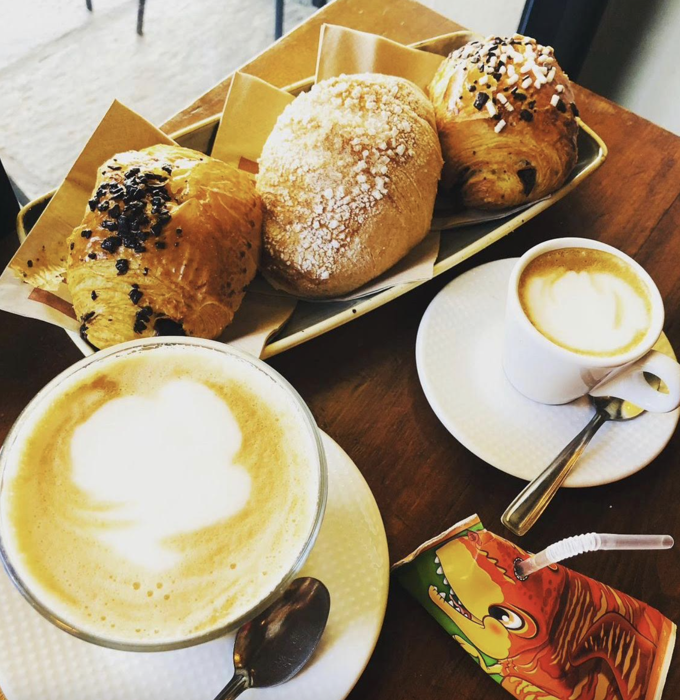
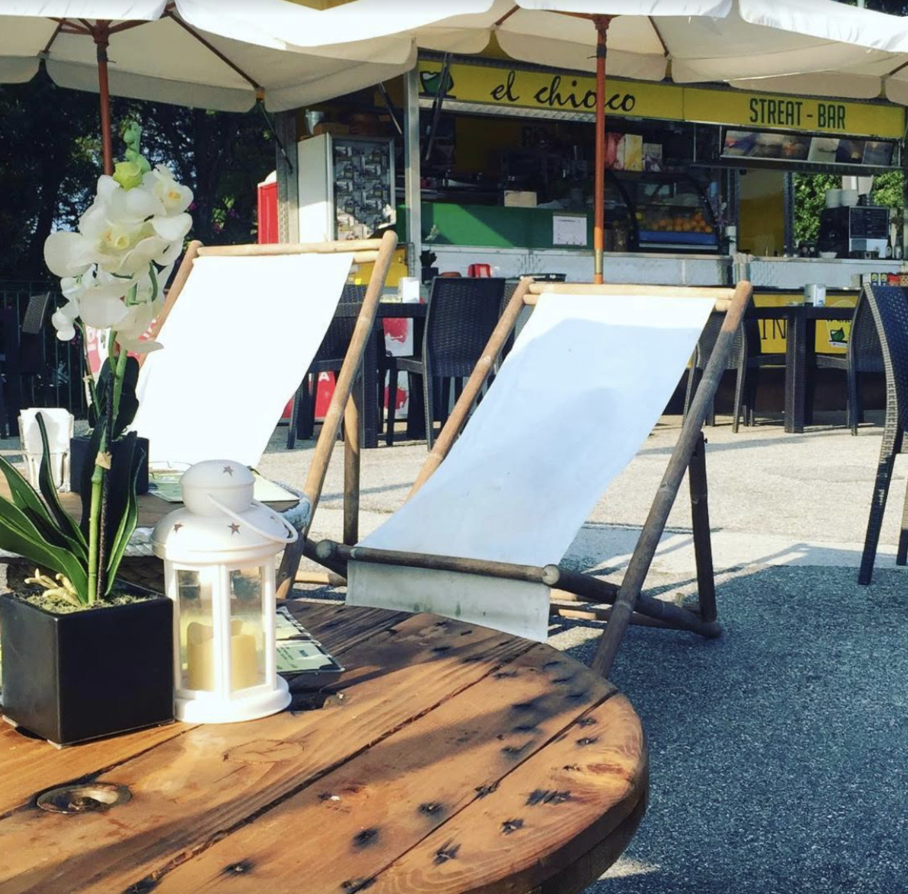
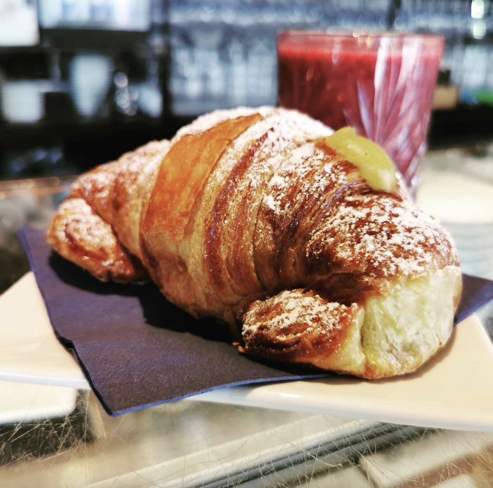
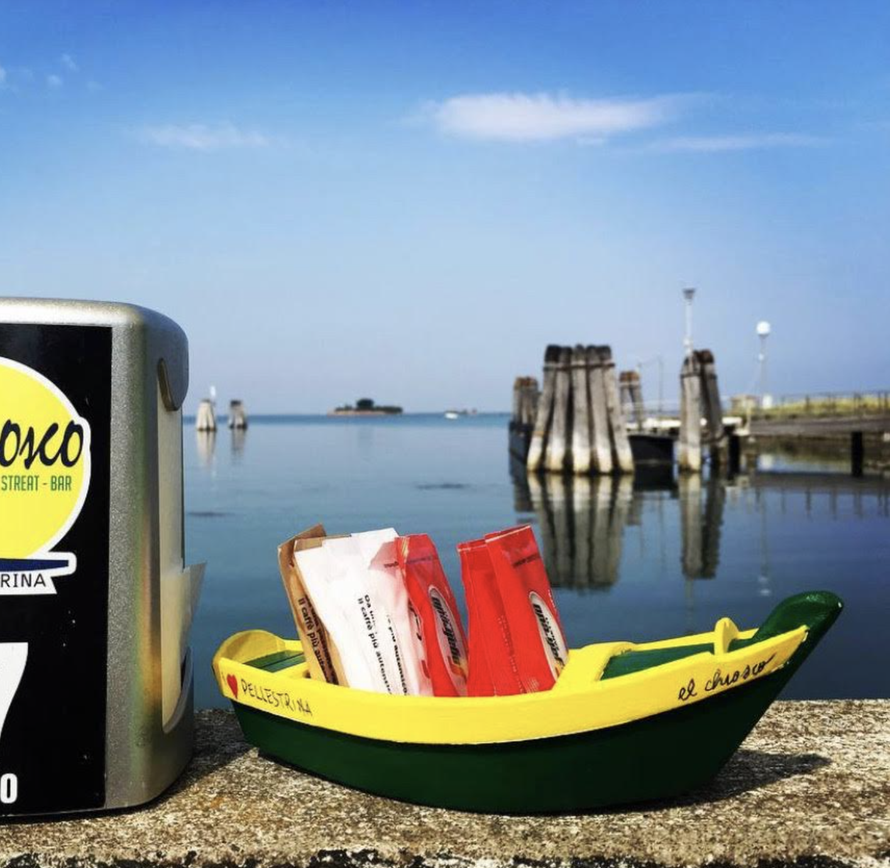

By having breakfast outsidefuori you can choose from a different range of croissant at Sandro's stand.

Sandro is a kind local guy who decided to open a stand inside a truckcamion at the very end of the island called "el chiosco", which means "the stand".
It is open air and by the wateracqua , so having breakfast under the san and by the lagoonlaguna is definitely a scenario you don't want to miss.

A fresh breakfast at Sandro's could be a cream croissant with a cold fresh squized orangearancia juice.

Sandro's is pretty far from your house but the weather is nice. You can either choose to call your brother to pick you up, or come back home walking by yourself on the beach side of the island. What do you do?